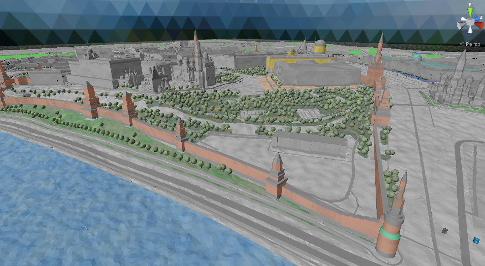
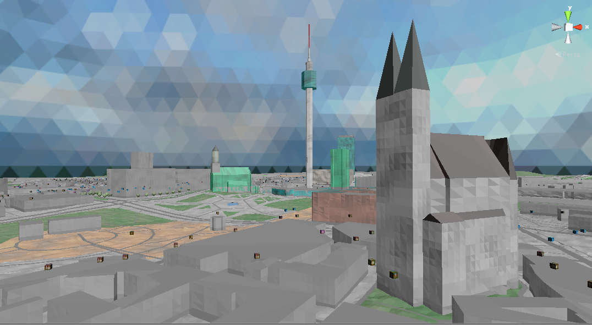

Demos
This page contains links to web player builds. Unfortunately, web player does not allow to download data from external servers dynamically (cross origin policy). That's why each build contains only small parts of selected city map.
Unity scene is constructed dynamically by processing map data files and creating game objects for fixed tile size using rules defined in predefined mapcss file. Actually, visual appearance can be improved by writing more complex shaders, more carefully selecting colors for gradients, ...
But it's not the main focus for me so far.
Discover Red Square, Moscow. 
Discover Alexanderplatz, Berlin. 
Cannot run demo? See screenshots.